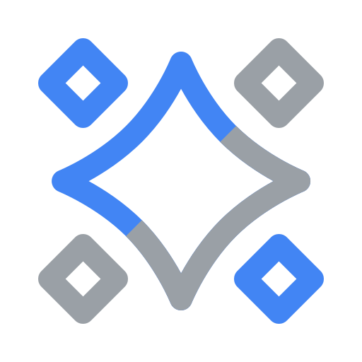
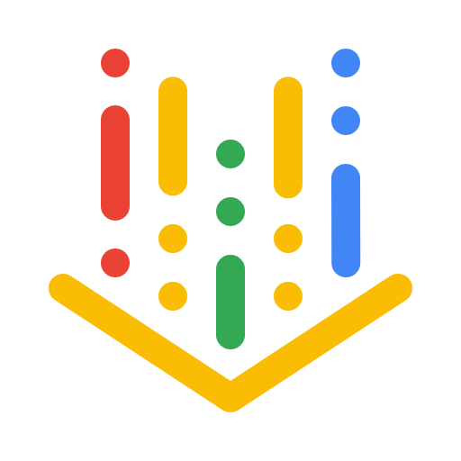
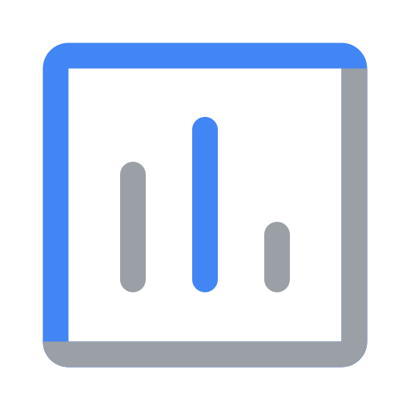

Agentic Transformation for India's Energy Giants
One briefing for oil and gas executives. Everyone starts together, the story is tailored to the client's sector with its own live demo, and every journey converges on agentic workflows and how we deliver them.
Everyone starts here
The same opening for every audience.
Executive Overview
The thesis, the sovereign AI foundation, and the choice of sector that tailors the rest of the briefing.
Tailored to the client
Same five-beat story, told in each sector's language, ending in its own live demo.
Everyone converges here
The workforce view, then how we build, run, govern and deliver it.

From one agent to an agentic organisation
The demo was one workflow; many agents run across operations.
How agents are built
No-code, low-code, high-code, ready-made.
Architecture
Runs where the data and the plant are.
Interactive
Model choice
The right model for the right task.
InteractiveGovernance
Identity, policy, human approval, audit.
Interactive
Where people meet the agent
Built once, used on every surface.

Structural resilience
A workforce and workflows that hold.
Why Google
The full AI stack, plus Gartner.
▶ Video100 days to proof of value
The engagement and the ask.